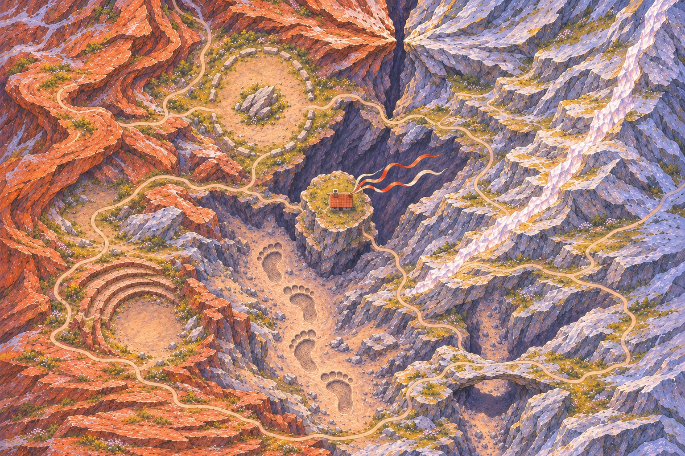

Свадьба двух гор
Карты и фигурки ведущего
Игровой комплект
3 игрока · 4 игрока · 5 игроков · 6 игроков · 7 игроков · 8 игроков
Карта кампании

Карты и фигурки ведущего
3 игрока · 4 игрока · 5 игроков · 6 игроков · 7 игроков · 8 игроков
